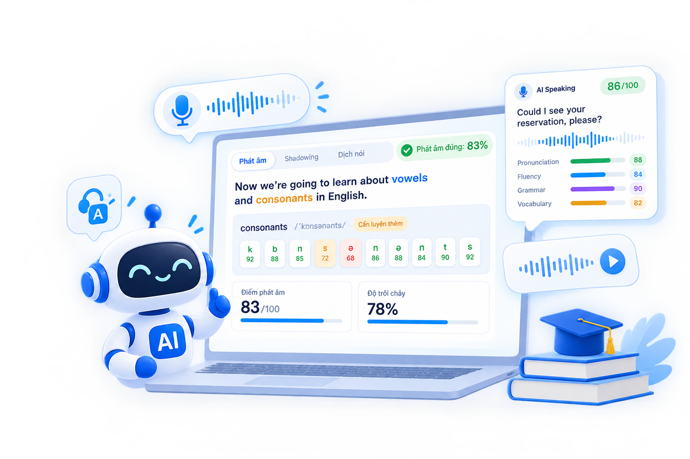
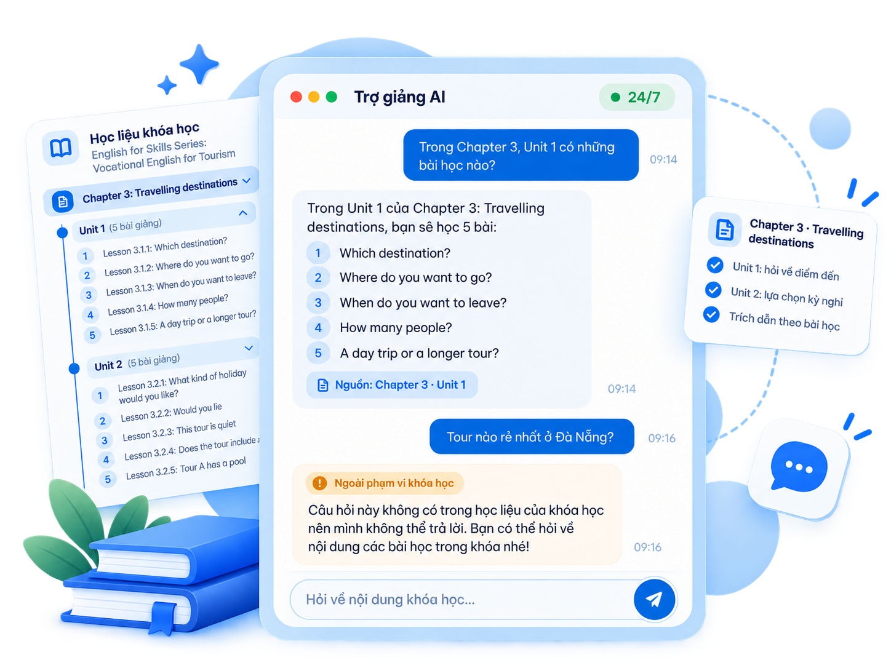
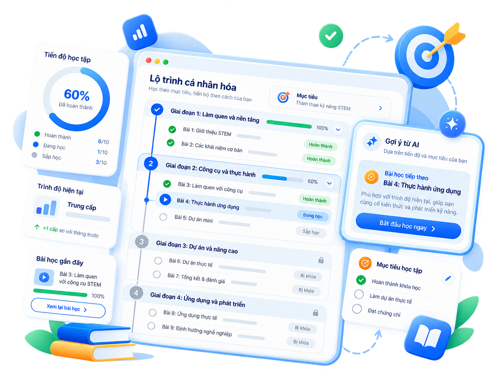
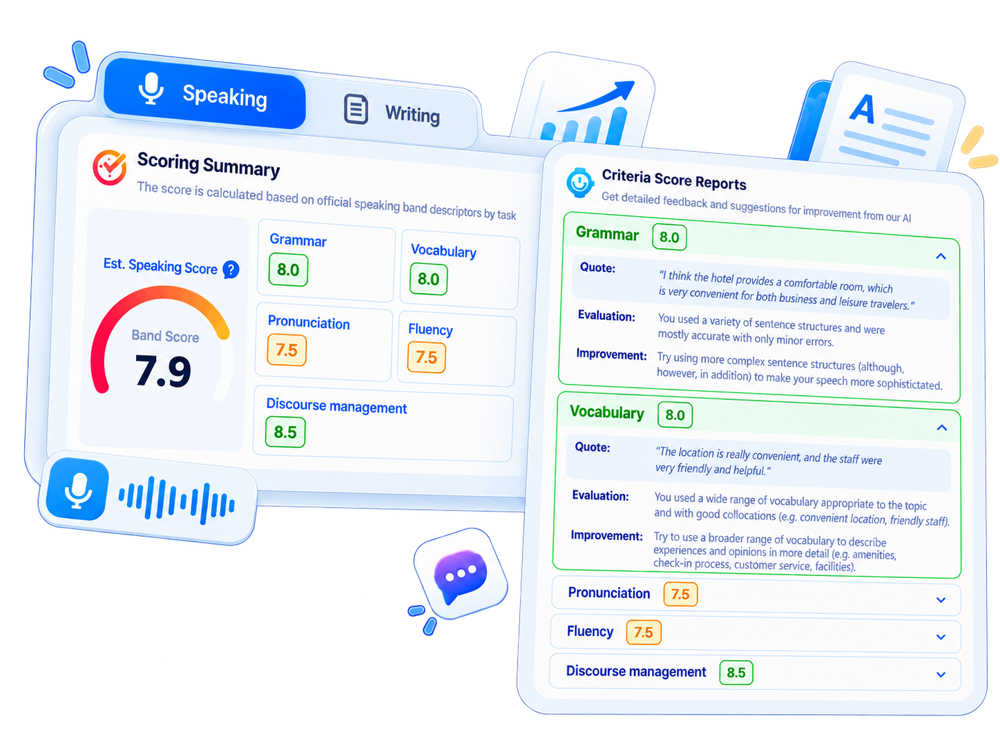

Online English learning platform AI integration
An online English teaching and learning solution for training institutions, with AI to train all 4 skills, career-oriented learning support and centralized training management.
Product Positioning
What Sets Us Apart
One shared system serves many training institutions while keeping each institution’s data separate. Courses and materials are created once and distributed to many institutions.
Institution APrivate data
Institution BPrivate data
Institution CPrivate data
Output Standards
Every course is mapped to Vietnam’s 6-level foreign language proficiency framework (for example, Level 1/A1 for intermediate and Level 2/A2 for college).
Appearance
Runs entirely on the web with nothing to install, and the interface adapts to computers, tablets and phones. Learners also have a mobile app.
Learning Models
Fully online learning, or a blend with in-person classes.
Industry-Specific Content
Institutions build their own courses, question banks, specialist terminology glossaries and grading rubrics for each field and profession.
Four AI Capabilities
AI Pronunciation Practice
Scores pronunciation down to individual phonemes (IPA/ARPAbet), measures fluency and color-codes feedback on every word. Learners can also practice shadowing and spoken translation.

AI Teaching Assistant
Answers questions around the clock, drawing only on the course’s own materials. Each reply cites its source, and questions outside the course scope are politely declined.

Personalized Learning Path
Builds a competency profile for each learner, raises or lowers difficulty during a lesson, and suggests what to study next and when to review. Instructors get early warnings about learners at risk of failing.

AI Competency Assessment
Grades Writing and Speaking against a rubric, with detailed comments and improvement tips. Low-confidence results are routed to a human expert for re-grading.

Seven Business Modules
Accounts and Training Organizations
Registration and sign-in (Google accounts included), with permissions by role and scope.
Course and Class Management
Drag-and-drop curriculum building, lesson unlock conditions, and course allocation to each institution.
Digital Content Authoring
Lectures, exercises, documents, a content library and a question bank with bulk import from Excel.
Interactive Learning
Videos with quiz stops, documents, notes, vocabulary practice, and the four skills of listening, speaking, reading and writing.
Engagement and Community
News, online chat and announcements.
Testing and Assessment
Multiple question types, scheduling and test rules, plus practice in 6 skills: Reading, Listening, Vocabulary, Grammar, Speaking and Writing.
Learning Analytics
Reports at 4 levels (institution, course, lecture, test), leaderboards and Excel export.
Users and Benefits by Role
Learners
- Study anytime, anywhere
- Get instant pronunciation feedback
- Follow a personal learning path
- Ask the teaching assistant at any time
Instructors
- Create their own content
- Less grading work thanks to AI
- Track every learner’s progress
Managers and Institution Administrators
- Institution-wide reporting
- Manage classes and instructors
- One unified platform
Other roles include system administrator, grading expert and guest (who can view public courses).
Technology and Integration
Designed for about 8,000 concurrent users and at least 2,000 learners taking a test at once.
Technology
Packaged in containers and orchestrated with Kubernetes, with a dedicated GPU cluster for AI.
Flexible Deployment
Runs on physical servers, virtualized environments, outsourced hosting or the cloud, with no vendor lock-in.
Flexible Scaling
Each service scales its resources up or down independently.
Interconnection
Two-way synchronization of grades and learning results with the institution’s training management software.
Open Standards
Information and personal data security
Designed for information systems rated security level 2 or higher, aligned with Decree 331/2026/ND-CP and TCVN 14423.
Data is protected with HTTPS/TLS 1.3 in transit and AES-256 at rest for sensitive data. A web application firewall (WAF), DDoS protection and malware scanning of uploaded files are included.
Data is hosted on infrastructure located in Vietnam and designed in line with the 2025 Law on Personal Data Protection.
Voice recordings are made only with the user’s consent, and no identifying information is sent to AI models.
Automated backups, version-based recovery, and audit logs retained for at least 12 months.
Licensing and Services
Licensing
Perpetual license covering all business components, the 4 AI services and the APIs.
Warranty
from the date of acceptance.
Operations
24/7A full administration and operations package including infrastructure, running 24/7. ABC operates the system for the first two years; from year 3 the institution can run it on its own.
Support
Helpdesk during business hours, with support by email, phone, a ticketing system and remote access.
Monday to Friday
Training and Handover
Training for designated staff and full handover of architecture, installation and operations documentation.